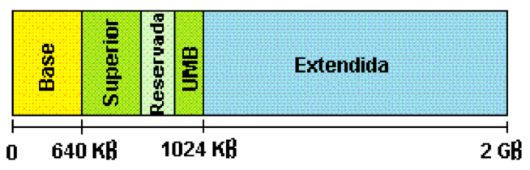

¿Qué es memoria RAM?
Lo primero que tenemos que tener en cuenta a que nos referimos a una memoria RAM, La denominada Random Acces Memory (RAM),
o Memoria de Acceso Aleatorio, es utilizada por el sistema para procesar toda la información que pasa por nuestra PC, en la
práctica podemos comprobar que a mayor cantidad de Memoria RAM más rápido será el procesamiento de los datos como para
procesos grandes de video, como el uso de videojuegos de última generación, edición de video, y demás [1].
La memoria de acceso aleatorio (RAM) se usa en computadoras y otros dispositivos electrónicos como una forma de acceder y
almacenar datos. Se puede acceder a este tipo de memoria de computadora al azar y sin la necesidad de doblegarse a
direcciones de datos anteriores o siguientes. Sin embargo, la memoria RAM es volátil y solo se mantendrá mientras esté
encendida. Una vez que el sistema pierde potencia, pierde todos los datos almacenados en la memoria. La RAM ha evolucionado
con el tiempo a medida que los ingenieros intentan obtener una mejor velocidad y eficiencia a la hora de procesar grandes
volúmenes de información [2].
La estructura lógica que posee la memoria RAM se la aprecia en la Figura 1. [3]:

Figura 1: ESTRUCRURA LOGICA, RAM [3]
La Figura 1, nos indica cada una de sus componentes que posee una RAM, para tener una idea más precisa sobre cada una de los
aspectos de la RAM; expondremos a continuación la función que está realizando cada una de sus partes, las cuales son la
siguientes:
Memoria base: desde 0 hasta 640 KB (Kilobytes), es en esta zona dónde se almacena la mayoría de los programas que el usuario
utiliza.
Memoria superior y reservada: de 640 a 1.024 MB (Megabytes), carga unas estructuras llamadas páginas de intercambio de
información y unos bloques de memoria llamados UMB.
Bloques UMB (UpperMemory Blocks): se trata de espacios asignados para el sistema dentro de la memoria superior, pero debido
a la configuración de diversos dispositivos como el video, en algunos casos estos espacios quedan sin utilizar, por lo que
se comenzó a pensar en utilizarlos de modo funcional, lo que se logra con optimizadores de memoria, que se utilizaba estos
bloques para cargar ciertos Drivers (controladores que permiten al Hardware ser utilizado en el sistema).
Memoria expandida: se trata de memoria paginada que se asigna a programas en memoria superior, la cual algunas veces no
se utilizaba debido a la configuración del equipo y con este método se puede utilizar.
REFERENCIAS:
[1] “Que es la memoria RAM ?” [Online]. Available: https://www.informatica-hoy.com.ar/hardware-pc-desktop/Que-es-la-memoria-RAM.php.
[2] S. Banerji, “Architectural Design of a RAM Arbiter.”
[3] S. Camacho, “MEMORIA RAM,” Junio 27, 2012. [Online]. Available: http://sandritamantenimiento2012.blogspot.com/2012/06/logica-de-la-memoria-ram-desde-las.html.